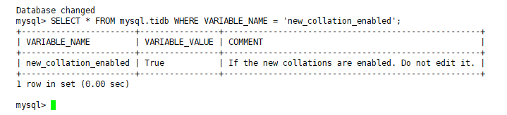

An error message indicating new_collation_enabled mismatch is displayed during restoration.
In TiDB v6.0.0 and later versions, the default value of new_collations_enabled_on_first_bootstrap is changed from false to true. BR backs up the new_collation_enabled configuration item in the mysql.tidb table of the upstream cluster. BR securely restores the backup data of the upstream cluster to the downstream cluster only when the upstream and downstream clusters have the same configuration for this configuration item. If the configuration on the upstream cluster is different from that on the downstream cluster, BR will reject the restoration and reports the mismatch error.
SELECT * FROM mysql.tidb WHERE VARIABLE_NAME = 'new_collation_enabled':
The following is an example of the command output:

SELECT * FROM mysql.tidb WHERE VARIABLE_NAME = 'new_collation_enabled':